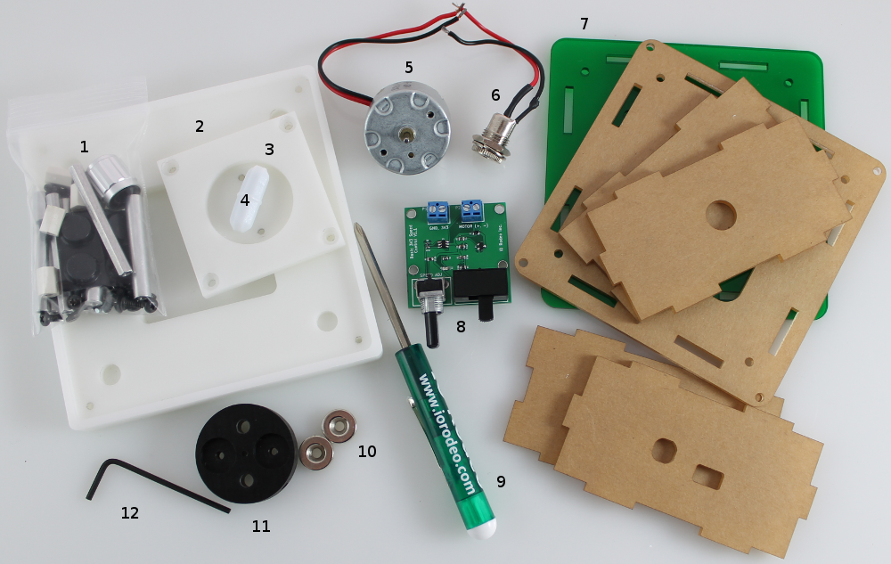

Kit Contents - checklist¶

Once you receive your kit, you should check that it contains all of the parts listed below:
- Hardware - for a full list of contents see Hardware and tools page
- Stir-plate top - Desktop kit version only
- Motor mount
- PTFE Stir-bar. Either a 25 mm x 8 mm stir bar (desktop kit) or cuvette 7 mm x 3 mm stir bar.
- 3V DC Motor. Pre-wired for connecting to the basic speed control PCB.
- DC Panel mount jack. Pre-wired for connecting to the basic speed control PCB.
- Acrylic enclose with colored base of your choice. A desktop enclosure is shown in the image above.
- Basic speed control PCB. Pre-assembled with components.
- Mini-screwdriver with reversible blade.
- Pair of magnets
- Magnet mount
- L-wrench
- 3.3V Power supply (image not shown)
- 250 mL beaker. Borosilicate glass beaker (image not shown). Desktop kit version only.
Each of these components is described in more detail on the next few pages.